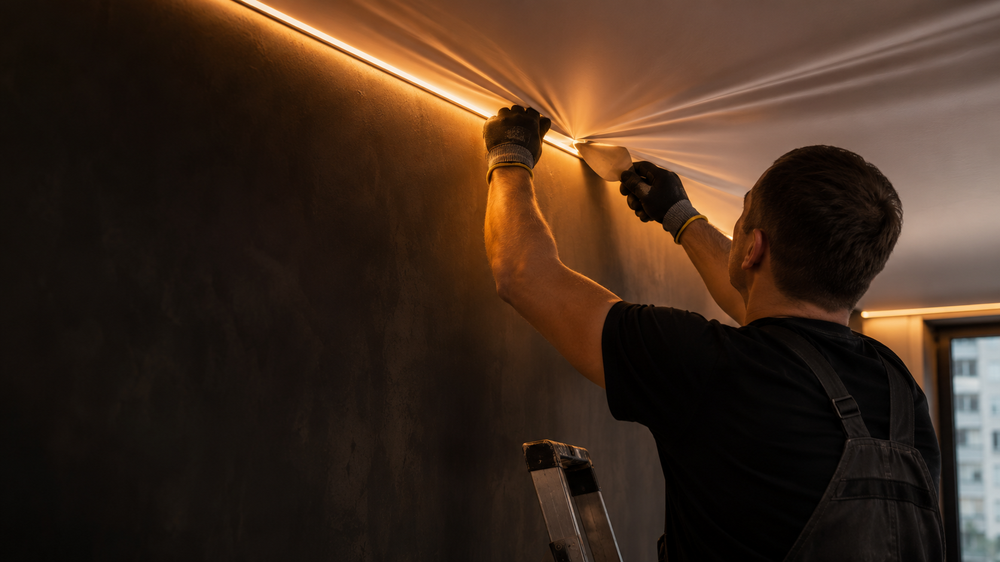

РОВНАЯ КЛАССИКА
Матовый или сатиновый потолок для комнаты, кухни или санузла. Спокойная поверхность, которая не спорит с интерьером.
 ↗
↗
Натяжные потолки напрямую от мастера
Я, Макс Антонов, устанавливаю потолки для квартир и домов: от ровного матового полотна до световых линий и теневого края.
Визуализация монтажа · выполненные работы — ниже
01 / ЗНАКОМСТВО
Потолок должен выглядеть хорошо в вашей комнате, а не только на картинке.
Поэтому я сначала выясняю площадь, свет и особенности помещения. Затем предлагаю решение и полную смету. На сайте — реальные фотографии работ и ориентиры, чтобы вы могли выбрать направление до замера.
02 / ПОРТФОЛИО
Здесь фотографии, переданные для портфолио Максима. Откройте снимок, чтобы рассмотреть свет, угол и примыкание.
03 / РЕШЕНИЯ
Разные комнаты требуют разной конструкции. Решение подбираю по интерьеру, освещению и бюджету.
Матовый или сатиновый потолок для комнаты, кухни или санузла. Спокойная поверхность, которая не спорит с интерьером.
↗Линии, контурная подсветка и точечные светильники. Сначала продумываю сценарий света, затем потолок вокруг него.
 ↗
↗Теневой профиль и аккуратное примыкание, когда важна каждая линия. Состав и стоимость зависят от комнаты.
 ↗
↗04 / СТОИМОСТЬ
Показываю ориентиры за квадратный метр. Точную стоимость с материалами и светом подтверждаю после деталей помещения.
Простой натяжной потолок
Полотно и монтаж, без освещения
Теневой потолок, свет отдельно
Минимальный заказ в моём объявлении — 9 500 ₽. Пример 10 м² за 9 000 ₽ в нём противоречит этому минимуму; стоимость такой комнаты уточню до заказа. Светильники, линии, карнизы и сложные примыкания рассчитываются отдельно. Интерьерный ориентир взят с сайта местной компании для сравнения рынка. Проверено 06.11.2026.
Уточнить стоимость в Авито05 / ПОРЯДОК РАБОТЫ
В переписке можно начать с фото комнаты и примерной площади. Этого хватит, чтобы обсудить направление.
Напишите населённый пункт, площадь и что хотите от освещения. Можно приложить фото.
Уточняем полотно, профиль, свет и дополнительные работы до начала монтажа.
Фиксируем условия, стоимость и срок. После монтажа вы принимаете результат.
06 / ВОПРОСЫ
По фото и примерным размерам я смогу обсудить решение и дать предварительный ориентир. Точную смету согласуем после уточнения конструкции и замера.
Напишите ваш населённый пункт. Возможность и стоимость выезда зависят от расстояния и объёма работ.
Это зависит от полотна и профиля. Монтаж, освещение, карнизы и сложные примыкания уточняются в конкретной смете. Я заранее объясню состав.
Здесь есть фотогалерея и PDF-каталог. Если расскажете о своей комнате, подберу близкие по задаче примеры.
07 / СВЯЗЬ
Напишите мне на Авито: город, площадь, фото и пожелания по свету. С этого начнём разговор о вашем потолке.
Написать Максу на АвитоДРУГИЕ КАНАЛЫ
Скачать PDF-каталог